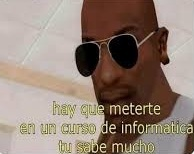

En la ETE de Computación aprendemos a comprender
cómo funciona realmente la tecnología que usa la computadora
Aprendemos sobre sistemas operativos, entendiendo
cómo interactúa el usuario con la
computadora y cómo se organizan sus recursos.
Además, desarrollamos habilidades prácticas al trabajar
con procesadores de texto, hojas de cálculo, presentaciones,
bases de datos y servicios de red. Una parte importante es la
creación de páginas web, donde aplicamos estructura, diseño
y organización para construir sitios funcionales.
En el área de programación y solución de problemas,
aprendemos a elaborar algoritmos, usar estructuras
de control y pensar de manera lógica y ordenada para
resolver situaciones paso a paso.
La ETE no solo nos enseña a usar programas, nos enseña
a entender la tecnología y a desarrollar habilidades
que pueden servirnos en el futuro académico y profesional.